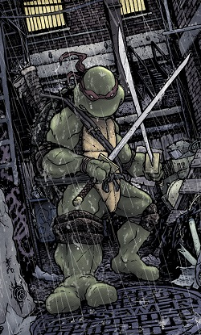
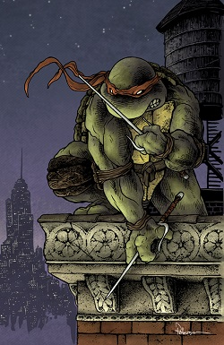
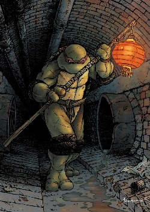
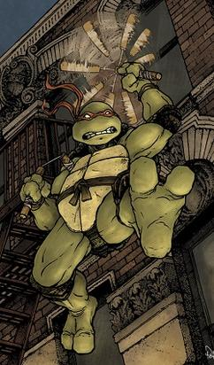

| Name | Image | Favourite Pizza | Weapons | Master |
|---|---|---|---|---|
| Leonardo |  | Margherita: tomato sauce, mozzarella | Twin katana | Splinter |
| Raphael |  | Peperoni: tomato sauce, mozzarella,peperoni | Twin sai | |
| Donatello |  | Capricciosa: tomato sauce, mozzarella, mushrooms, ham, eggs, artichoke, cocktail sausages, green olives | Bo | |
| Michelangelo |  | Funghi: tomato sauce, mozzarella, mushrooms | Dual nunchaku |